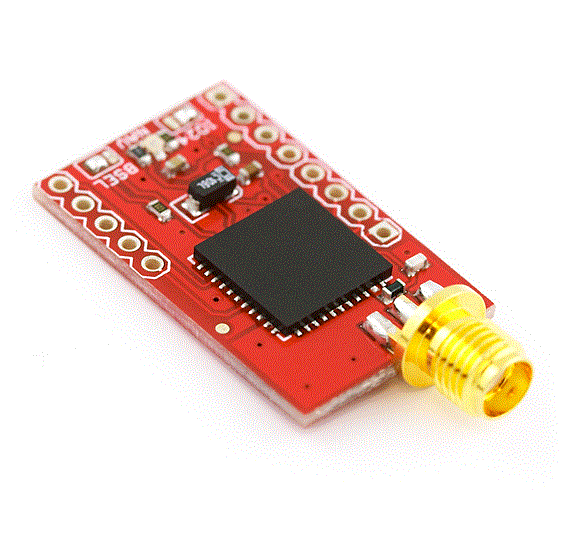
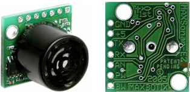
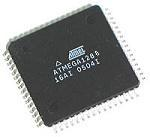
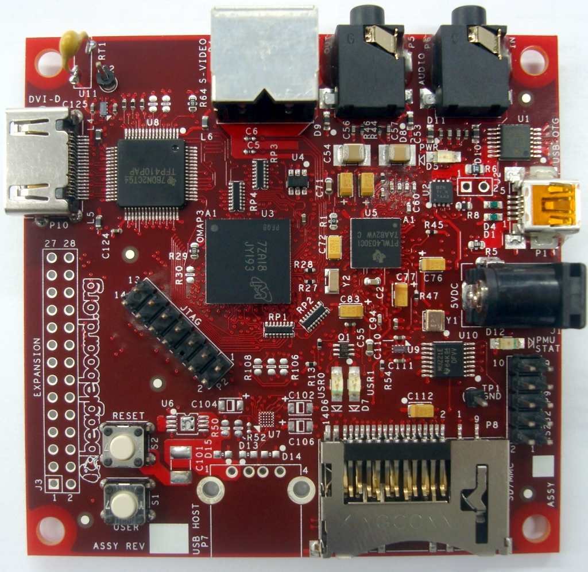
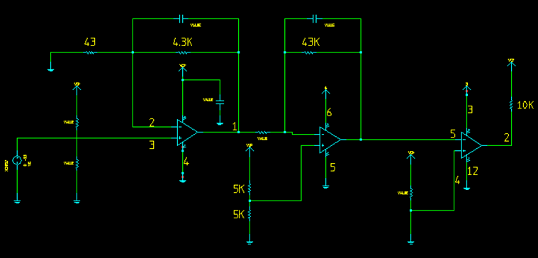
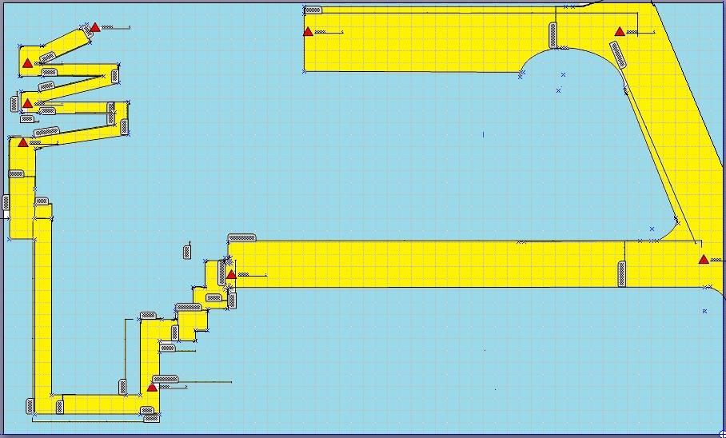
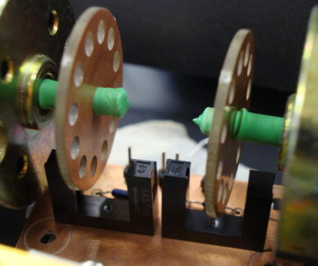

Designs
Navigation Systems
Hardware
GPS
The GPS unit, which is a Venus GPS with SMA Connector, is used for the robot in order to estimate the location of the robot. The GPS is 51 channel acquisition and 14 channel tracking with high sensitivity of -161dBm and accuracy of less than 2.5m. In addition, the module outputs the standard NMEA-0183 or SkyTraq Binary sentences at a default rate of 9600bps.
Object avoidance sensors
The method used for obstacle avoidance for our robot was to apply two ultrasonic sensors that were to be placed in front and on the right side of the robot. In doing so, the sensors would allow our robot the ability to detect objects in its field of view. The LV-MaxSonar-EZ1 we used offered variable-ranged detection along with an ultra low power consumption. The LV-MaxSonar-EZ1 detected objects and provided sonar range information from 6-inches to 254-inches with 1-inch resolution, where distances under 6-inches defaulted to back 6-inches. The interface output formats included pulse width, analog voltage, and asynchronous serial digital.
AVR ATmega 1280
The AVR ATMega1280 was used for two different functions for our robot. The first function was to collect all sensor information on the robot excluding wheel encoder ticks. Collected information came from right and left flex sensors, right and left ultrasonic rangefinders, compass heading, and the position of the servo. All of this information was polled every 150ms, packaged neatly into xml, and then sent off to our main processor via a serial connection over USB.
Beagleboard
The Beagleboard is our main processing unit. It is a low-cost, fan-less, single board computer that only consumed 5V and about 400 mA when running. The clock speed is 600Mhz, there is 256 MB of RAM, and it has 256Kb L2 cache. Using a 4GB SD flash card, we opted to install the Ubuntu distribution of GNU/Linux for our operating system. The reason for this selection was due to the excellent package management system that comes with Ubuntu(apt) and driver support.
Ultrasonic beacon sensors
Checkpoints on the course transmitted 25 kHz of signal and we used ultra sonic beacon receiver sensors to find these checkpoints. The manufactured ultrasonic sensor can only get signal within a 2 feet therefore, we designed a circuit to amplify the signal in order to detect a signal at a range of 15 to 20 feet without any outside interference. To meet amplification needs we used a dual amplifier, the BA4558, whose gain was 400 times the signal at 10MHz bandwidth (i.e. 10MHZ / 25KHZ = 400).
Software
Path-finding
Using points after mapping the course, one has several different methods one can use. The best method would be to use cubic splines. However, the path of the robot for this particular course is very linear in nature, so it is appropriate to use a simpler method. In the end, we opted to create a piecewise linear path to follow. This way we would only need to concern ourselves with the distance between two points, and the change of heading at each of the waypoints.
Locomotion System
Hardware
H-bridge
Since we have 2 DC motors and we are controlling each wheel independently. H-bridges are the electronic circuits that control motors direction and speed by voltage. We utilized a 24 V battery 4200mA for our motors, and therefore we needed an h-bridge capable of handling this kind of current with 2 channels. The L298, by ST, is a dual full-bridge driver chip chosen for the task because of its capability of driving 2 A currents for each motor. Based on solarobotics 1 and canadakit’s 2 designs our h-bridge circuit was crafted (h-bridge schematic in Appendix B). Initially, heat dissipation was a problem when starting the motors because of current spikes. To remedy this we used a huge heatsink on L298 and the temperature was never higher than 50 ° during our experiments after this. Each channel has one enable pin and two controls pins. The enable pin is always high ( 5 V) during operation. The control pins determines direction and the speed by PWM. We have capability to go forward, backward, turn left and right
Wheel encoders
Wheel encoders are the only sensors in locomotion system. They give us feedback about actual displacement and speed by counting number of signal changes. The wheel to gear ratio was 1: 3 and our motors have 65.5:1 ratio. At first we only used one pin to cut the beam for each inner revolution; however, this resolution proved to not be good enough for proper speed control. To counter this we increased the resolution by changing the pin with a PCB circle with 12 equally spaced round holes. This way we had 12 times the resolution yielding a total signal change up to 2364, and giving us enough space to control the speed. The resulting conversion factor was: 2364 clicks = 1 revolution of the wheel = 2 feet
Microcontroller
The digital inputs need to be controlled by a microcontroller. First, we used one microcontroller, but we found it necessary to dedicate a second microcontroller due to high interrupt needs of motor control. The ATMega328 was chosen for this task due to its 4 PWM channels (for motor control pins) and 2 external hardware interrupt channels (one for each wheel encoder signal). Due to time constraints, we used Arduino Deumilanove board instead of a designed PCB. The default frequency values for the PWM ports (1kHz for Timer 0 and 500 Hz for Timer 1) of Arduino were suitable for our motors, although they made a whining sound but worked fine.
Software
Speed control
Under experimental conditions, our motors did not behave similarly; hence, motor control was needed to make sure they operated uniformly. In order to go straight, a PID control system used to maintain same speed. For example, if we set a desired speed, then the actual numbers of clicks for each motor are counted by interrupts. Moreover, if the clicks were more or less than desired, then we decreased or increased the PWM for that motor respectively. Otherwise, we did not make any changes.